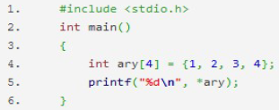
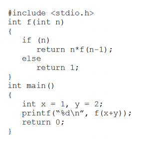
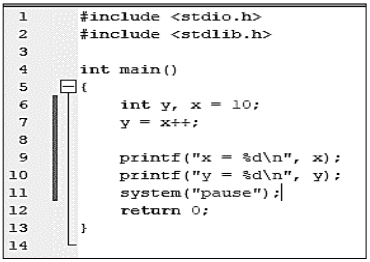

Exercícios
1- Qual será a saída do seguinte código C?

B) Erro de tempo de compilação (run time error).
2- Linguagem compilada é uma linguagem de programação em que o código fonte, nessa linguagem, é executado diretamente pelo sistema operacional ou pelo processador, após ser traduzido por meio de um processo chamado compilação, usando um programa de computador chamado compilador, para uma linguagem de baixo nível, como linguagem de montagem ou código de máquina. Assinale a alternativa que representa somente linguagens que são compiladas.
A) Cobol, PHP, C e Python
B) Cobol, C, Delphi e PHP
C) Cobol, C, Delphi e C++
D) Delphi, C, PHP e Python
3- Considere o seguinte programa escrito na linguagem C:

Ao final de sua execução, o programa exibirá
4- Em relação às características da linguagem C, assinale a alternativa correta.
A) É uma linguagem interpretada.
B) Não possui tratamento de exceções.
C) Possui 64 palavras reservadas.
D) Suporta orientação a objeto.
5- Considerando o operador de pós-incremento, utilizado na linguagem C, o resultado da execução do código é:
